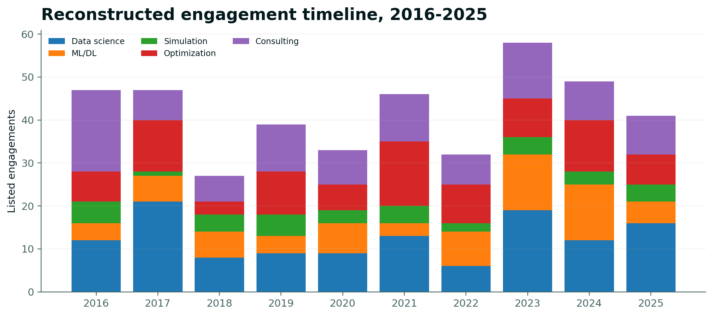
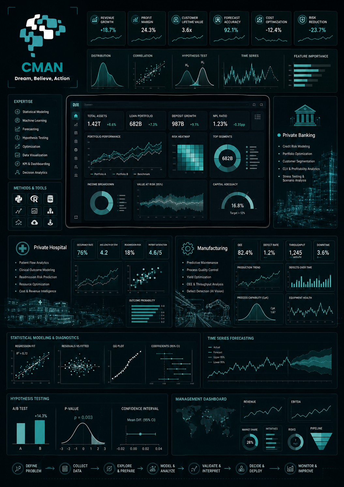
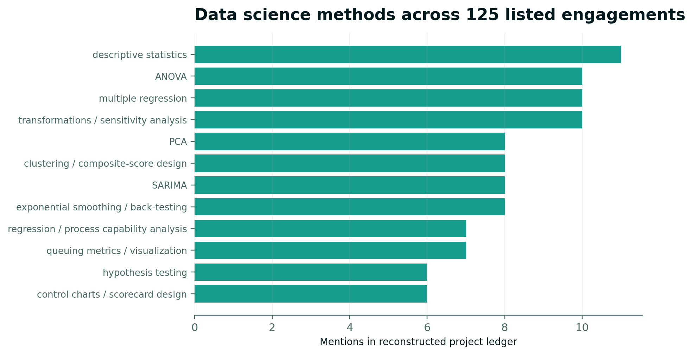
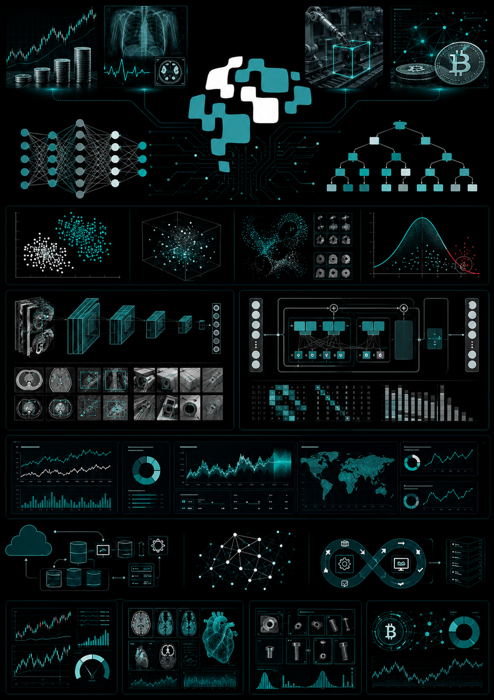
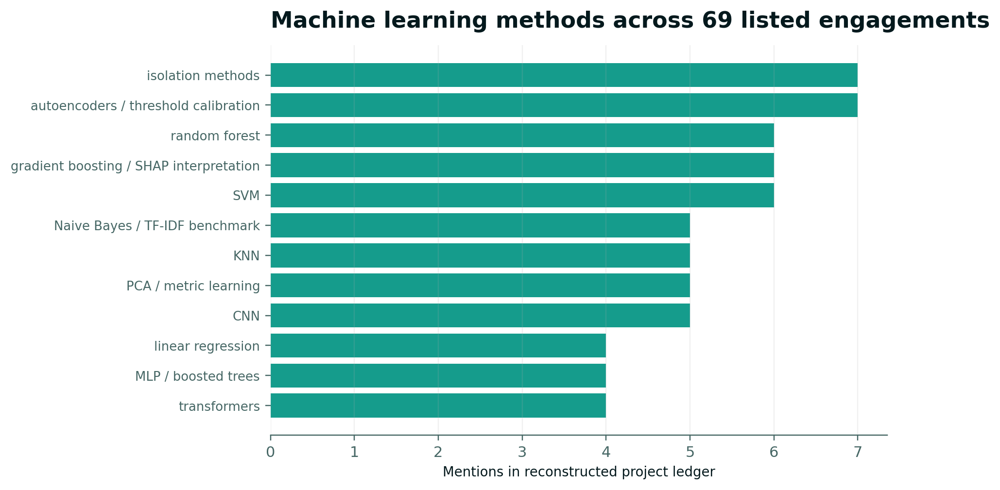
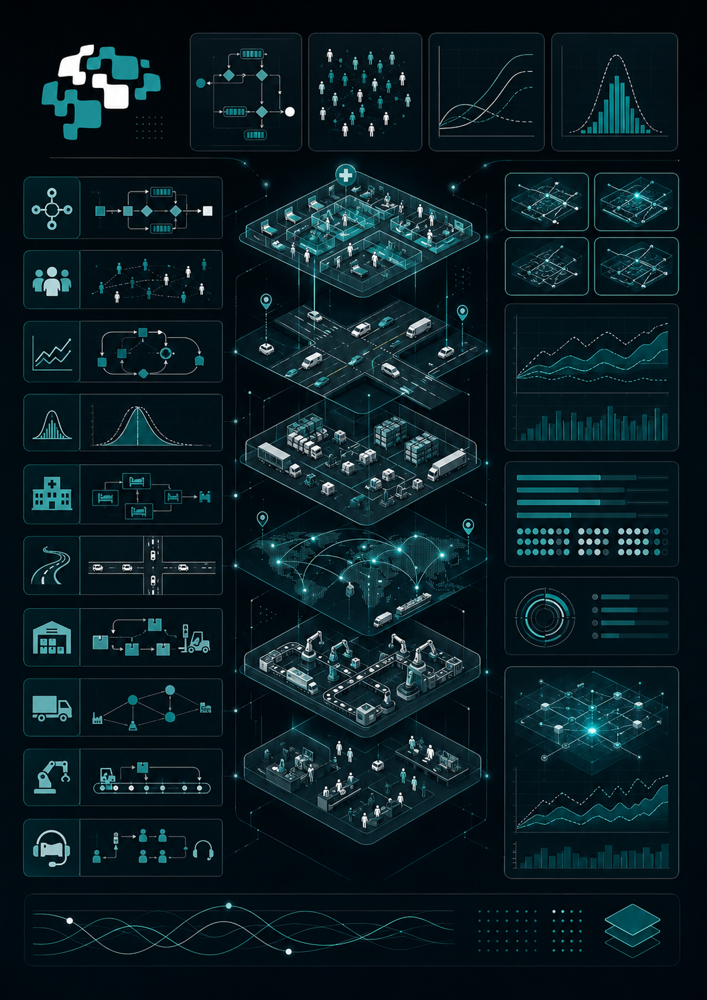
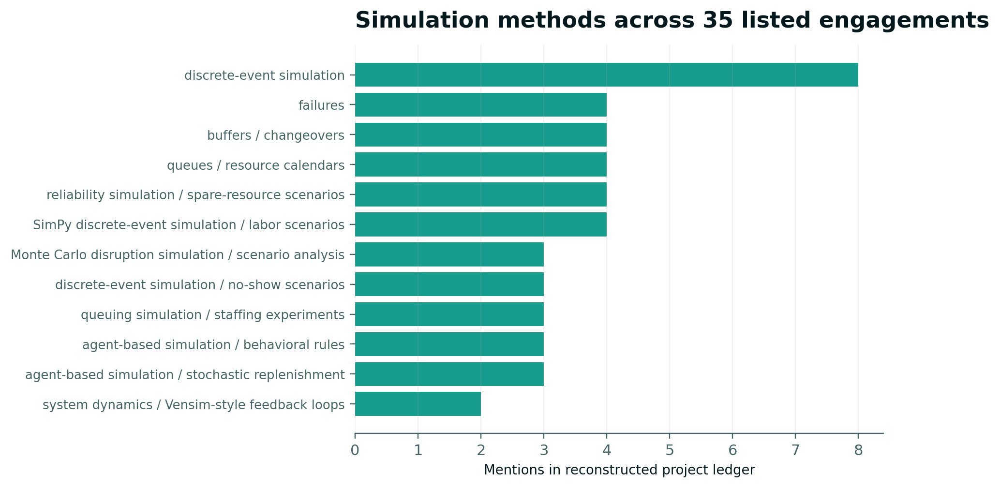
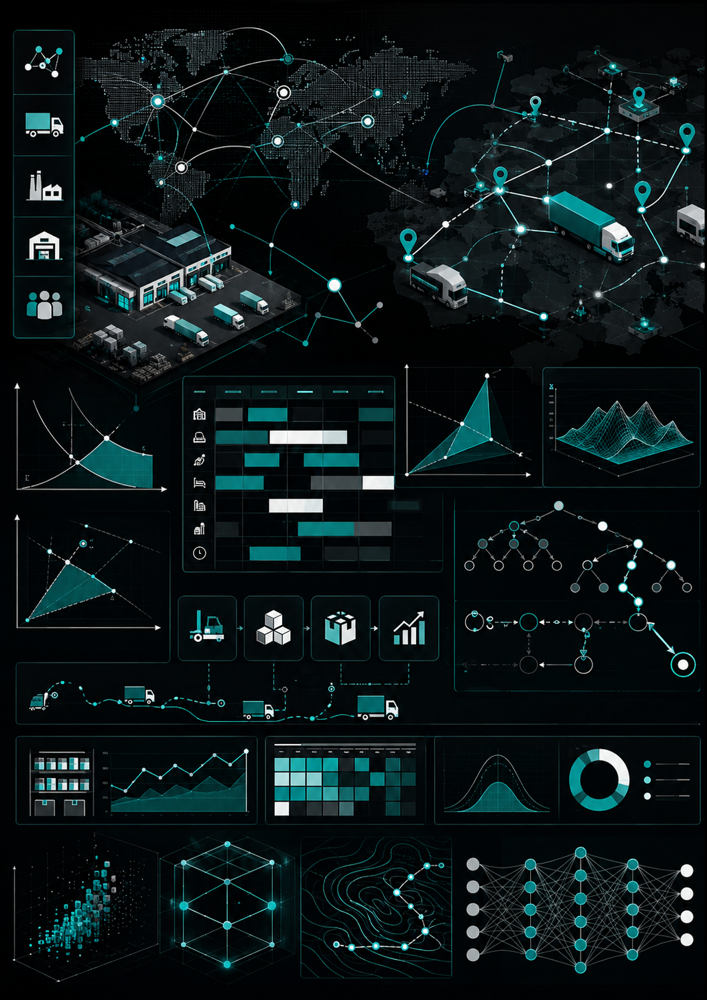
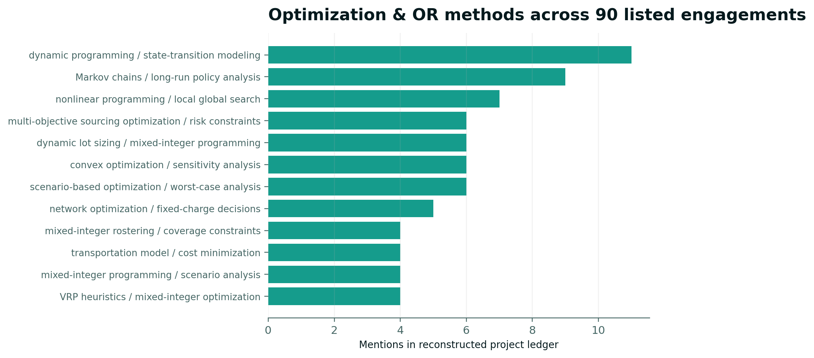
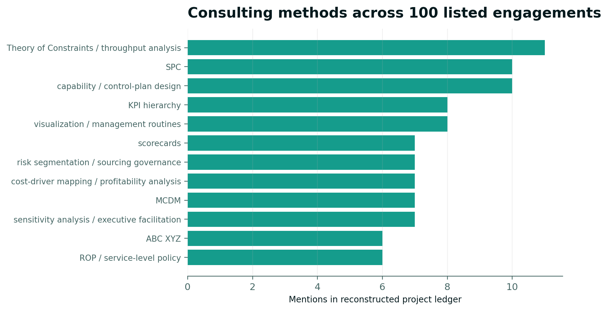

001
Created a process variability investigation for a industrial company using SPC, capability indices and root-cause analytics; 09 Jan-23 Jan 2016.
A decade of applied analytics, machine learning, simulation, optimization and operations consulting delivered through CMAN across industrial, financial, healthcare, technology, logistics and management settings.


Applied statistical modeling, exploratory analytics, visualization, DOE, forecasting, reliability analysis, causal diagnostics, regression, factor analysis, process analytics, and decision-support work across financial, healthcare, industrial, logistics, technology and service environments.


Searchable, anonymized project summaries covering work performed between 2016 and 2025.
Created a process variability investigation for a industrial company using SPC, capability indices and root-cause analytics; 09 Jan-23 Jan 2016.
Built a production yield analysis for a distribution company using ANOVA, regression and process capability analysis; 11 Jan-14 Jan 2016.
Re-engineered a supplier performance study for a private hospital using hypothesis testing, control charts and scorecard design; 14 Mar-09 May 2016.
Formulated a multivariate performance benchmark for a private healthcare organization using PCA, clustering and composite-score design; 20 Mar-10 Apr 2016.
Evaluated a patient flow analytics for a logistics company using descriptive statistics, queuing metrics and visualization; 29 May-03 Jul 2016.
Developed a cost-driver modeling for a distribution company using multiple regression, transformations and sensitivity analysis; 20 Jun-23 Jun 2016; produced a reproducible model and management brief.
Evaluated a churn diagnostic study for a industrial company using correlation screening, logistic regression and cohort analysis; 12 Jul-06 Sep 2016; produced a reproducible model and management brief.
Delivered a causal-driver exploration for a distribution company using DAG-guided regression, matching diagnostics and sensitivity checks; 28 Jul-02 Aug 2016.
Re-engineered a supplier performance study for a service company using hypothesis testing, control charts and scorecard design; 18 Aug-27 Oct 2016; delivered a decision dashboard and validation notes.
Created a survey structure analysis for a manufacturing company using factor analysis, reliability testing and segmentation; 05 Oct-02 Nov 2016.
Developed a multivariate performance benchmark for a research group using PCA, clustering and composite-score design; 12 Nov-10 Dec 2016.
Evaluated a multivariate performance benchmark for a insurance company using PCA, clustering and composite-score design; 07 Dec 2016-18 Jan 2017.
Created a supplier performance study for a manufacturing company using hypothesis testing, control charts and scorecard design; 03 Jan-14 Mar 2017.
Developed a maintenance failure analysis for a technology company using Weibull analysis, survival curves and reliability metrics; 05 Jan-02 Feb 2017.
Built a service demand forecast for a logistics company using SARIMA, exponential smoothing and back-testing; 23 Jan-06 Mar 2017.
Formulated a cost-driver modeling for a distribution company using multiple regression, transformations and sensitivity analysis; 03 Feb-12 Feb 2017; produced a reproducible model and management brief.
Built a supplier performance study for a manufacturing company using hypothesis testing, control charts and scorecard design; 03 Apr-15 Apr 2017.
Evaluated a process variability investigation for a logistics company using SPC, capability indices and root-cause analytics; 04 Apr-07 Apr 2017.
Developed a sales and demand decomposition for a insurance company using time-series decomposition, trend analysis and forecasting; 08 Apr-20 May 2017.
Designed a sales and demand decomposition for a manufacturing company using time-series decomposition, trend analysis and forecasting; 10 May-07 Jun 2017; produced a reproducible model and management brief.
Developed a inventory consumption analytics for a private healthcare organization using ABC/XYZ analysis, variability profiling and forecasting; 23 May-06 Jun 2017.
Built a experimental process optimization for a manufacturing company using factorial DOE, interaction analysis and contour plots; 24 May-07 Jun 2017.
Designed a pricing response analysis for a research group using elasticity regression, scenario analysis and visualization; 28 May-15 Jun 2017.
Created a service demand forecast for a retail company using SARIMA, exponential smoothing and back-testing; 17 Jun-26 Jun 2017.
Created a patient flow analytics for a insurance company using descriptive statistics, queuing metrics and visualization; 19 Jun-23 Jun 2017.
Designed a patient flow analytics for a insurance company using descriptive statistics, queuing metrics and visualization; 17 Jul-20 Jul 2017.
Created a quality-loss investigation for a private hospital using DOE, ANOVA and response surface methodology; 27 Jul-01 Aug 2017; delivered a decision dashboard and validation notes.
Developed a supplier performance study for a private bank using hypothesis testing, control charts and scorecard design; 20 Aug-22 Aug 2017.
Re-engineered a campaign effectiveness analysis for a private healthcare organization using A/B testing, uplift comparison and confidence intervals; 27 Sep-20 Dec 2017; produced a reproducible model and management brief.
Designed a cost-driver modeling for a private bank using multiple regression, transformations and sensitivity analysis; 03 Oct-26 Dec 2017.
Created a maintenance failure analysis for a distribution company using Weibull analysis, survival curves and reliability metrics; 16 Oct-03 Nov 2017; included sensitivity checks and implementation guidance.
Developed a production yield analysis for a industrial company using ANOVA, regression and process capability analysis; 30 Oct 2017-28 Jan 2018.
Evaluated a forecast accuracy benchmarking for a insurance company using rolling-origin validation, MAPE/MASE and error diagnostics; 10 Nov-22 Nov 2017.
Conducted a inventory consumption analytics for a insurance company using ABC/XYZ analysis, variability profiling and forecasting; 13 Jan-25 Jan 2018; included sensitivity checks and implementation guidance.
Evaluated a quality-loss investigation for a research group using DOE, ANOVA and response surface methodology; 20 Feb-21 May 2018.
Re-engineered a causal-driver exploration for a retail company using DAG-guided regression, matching diagnostics and sensitivity checks; 12 Apr-05 Jul 2018.
Designed a production yield analysis for a service company using ANOVA, regression and process capability analysis; 24 Jun-03 Jul 2018.
Implemented a sales and demand decomposition for a private hospital using time-series decomposition, trend analysis and forecasting; 30 Aug-08 Sep 2018.
Conducted a workforce productivity analysis for a research group using ANOVA, regression and workload normalization; 25 Sep-29 Sep 2018; included sensitivity checks and implementation guidance.
Re-engineered a service demand forecast for a private hospital using SARIMA, exponential smoothing and back-testing; 24 Oct 2018-22 Jan 2019.
Built a forecast accuracy benchmarking for a private hospital using rolling-origin validation, MAPE/MASE and error diagnostics; 08 Nov 2018-03 Jan 2019; produced a reproducible model and management brief.
Delivered a claims severity analysis for a private hospital using GLM regression, outlier diagnostics and bootstrapping; 09 Feb-14 Feb 2019.
Re-engineered a patient flow analytics for a private bank using descriptive statistics, queuing metrics and visualization; 29 Mar-02 Apr 2019.
Created a maintenance failure analysis for a research group using Weibull analysis, survival curves and reliability metrics; 04 Jul-01 Aug 2019; included sensitivity checks and implementation guidance.
Delivered a operational KPI redesign for a private bank using EDA, robust statistics and management dashboarding; 04 Sep-13 Sep 2019.
Formulated a management data-quality audit for a distribution company using descriptive statistics, missing-data diagnostics and visualization; 15 Oct-19 Oct 2019.
Formulated a production yield analysis for a private hospital using ANOVA, regression and process capability analysis; 15 Oct-17 Oct 2019.
Created a patient flow analytics for a research group using descriptive statistics, queuing metrics and visualization; 31 Oct-18 Nov 2019.
Formulated a multivariate performance benchmark for a manufacturing company using PCA, clustering and composite-score design; 18 Nov 2019-10 Feb 2020.
Re-engineered a causal-driver exploration for a industrial company using DAG-guided regression, matching diagnostics and sensitivity checks; 11 Dec 2019-10 Mar 2020.
Created a causal-driver exploration for a private bank using DAG-guided regression, matching diagnostics and sensitivity checks; 05 Jan-16 Feb 2020; included sensitivity checks and implementation guidance.
Evaluated a experimental process optimization for a financial services company using factorial DOE, interaction analysis and contour plots; 15 Jan-05 Feb 2020.
Developed a operational KPI redesign for a industrial company using EDA, robust statistics and management dashboarding; 24 May-22 Aug 2020; delivered a decision dashboard and validation notes.
Implemented a survey structure analysis for a private healthcare organization using factor analysis, reliability testing and segmentation; 25 Jul-01 Aug 2020.
Implemented a causal-driver exploration for a private hospital using DAG-guided regression, matching diagnostics and sensitivity checks; 09 Aug-13 Sep 2020; included sensitivity checks and implementation guidance.
Created a churn diagnostic study for a private hospital using correlation screening, logistic regression and cohort analysis; 30 Sep-05 Oct 2020; delivered a decision dashboard and validation notes.
Conducted a causal-driver exploration for a private bank using DAG-guided regression, matching diagnostics and sensitivity checks; 02 Nov-20 Nov 2020; included sensitivity checks and implementation guidance.
Delivered a inventory consumption analytics for a research group using ABC/XYZ analysis, variability profiling and forecasting; 17 Nov-29 Dec 2020; produced a reproducible model and management brief.
Designed a length-of-stay driver analysis for a service company using survival analysis, regression and stratification; 24 Dec 2020-24 Mar 2021.
Conducted a survey structure analysis for a retail company using factor analysis, reliability testing and segmentation; 03 Jan-05 Jan 2021.
Implemented a service demand forecast for a private healthcare organization using SARIMA, exponential smoothing and back-testing; 21 Feb-22 May 2021.
Developed a cost-driver modeling for a logistics company using multiple regression, transformations and sensitivity analysis; 06 Mar-03 Apr 2021.
Re-engineered a cost-driver modeling for a private healthcare organization using multiple regression, transformations and sensitivity analysis; 14 Mar-26 Mar 2021; produced a reproducible model and management brief.
Conducted a length-of-stay driver analysis for a research group using survival analysis, regression and stratification; 25 Mar-01 Apr 2021.
Designed a quality-loss investigation for a private hospital using DOE, ANOVA and response surface methodology; 09 Apr-18 Apr 2021.
Delivered a service demand forecast for a insurance company using SARIMA, exponential smoothing and back-testing; 03 May-17 May 2021.
Re-engineered a quality-loss investigation for a private healthcare organization using DOE, ANOVA and response surface methodology; 06 May-20 May 2021.
Created a management data-quality audit for a distribution company using descriptive statistics, missing-data diagnostics and visualization; 23 Jun-15 Sep 2021.
Built a experimental process optimization for a distribution company using factorial DOE, interaction analysis and contour plots; 30 Jun-28 Sep 2021; included sensitivity checks and implementation guidance.
Built a workforce productivity analysis for a private hospital using ANOVA, regression and workload normalization; 31 Aug-04 Sep 2021; included sensitivity checks and implementation guidance.
Developed a quality-loss investigation for a research group using DOE, ANOVA and response surface methodology; 28 Oct-15 Nov 2021.
Delivered a survey structure analysis for a insurance company using factor analysis, reliability testing and segmentation; 07 Dec-12 Dec 2021.
Developed a cost-driver modeling for a retail company using multiple regression, transformations and sensitivity analysis; 24 Feb-28 Feb 2022; included sensitivity checks and implementation guidance.
Designed a forecast accuracy benchmarking for a private healthcare organization using rolling-origin validation, MAPE/MASE and error diagnostics; 10 May-21 Jun 2022; included sensitivity checks and implementation guidance.
Delivered a length-of-stay driver analysis for a research group using survival analysis, regression and stratification; 06 Jun-18 Jul 2022.
Evaluated a multivariate performance benchmark for a research group using PCA, clustering and composite-score design; 20 Jun-23 Jun 2022.
Evaluated a cost-driver modeling for a service company using multiple regression, transformations and sensitivity analysis; 06 Sep-27 Sep 2022; delivered a decision dashboard and validation notes.
Conducted a cost-driver modeling for a insurance company using multiple regression, transformations and sensitivity analysis; 29 Sep-27 Oct 2022.
Delivered a multivariate performance benchmark for a industrial company using PCA, clustering and composite-score design; 23 Jan-30 Jan 2023; delivered documented code, results and handover notes.
Re-engineered a pricing response analysis for a private bank using elasticity regression, scenario analysis and visualization; 05 Feb-16 Apr 2023.
Delivered a experimental process optimization for a financial services company using factorial DOE, interaction analysis and contour plots; 12 Feb-14 Feb 2023.
Implemented a length-of-stay driver analysis for a private healthcare organization using survival analysis, regression and stratification; 25 Feb-11 Mar 2023; delivered a decision dashboard and validation notes.
Formulated a survey structure analysis for a technology company using factor analysis, reliability testing and segmentation; 02 Mar-09 Mar 2023.
Formulated a cost-driver modeling for a industrial company using multiple regression, transformations and sensitivity analysis; 07 Mar-04 Apr 2023; produced a reproducible model and management brief.
Implemented a production yield analysis for a private healthcare organization using ANOVA, regression and process capability analysis; 25 Mar-28 Mar 2023.
Developed a survey structure analysis for a research group using factor analysis, reliability testing and segmentation; 26 Apr-24 May 2023.
Designed a multivariate performance benchmark for a financial services company using PCA, clustering and composite-score design; 03 May-08 May 2023.
Created a experimental process optimization for a financial services company using factorial DOE, interaction analysis and contour plots; 08 May-15 May 2023; delivered a decision dashboard and validation notes.
Evaluated a cost-driver modeling for a industrial company using multiple regression, transformations and sensitivity analysis; 15 Jun-06 Jul 2023; delivered documented code, results and handover notes.
Re-engineered a service demand forecast for a retail company using SARIMA, exponential smoothing and back-testing; 14 Jul-01 Aug 2023.
Designed a process variability investigation for a financial services company using SPC, capability indices and root-cause analytics; 29 Aug-10 Oct 2023.
Implemented a default-risk driver study for a private healthcare organization using logistic regression, hypothesis testing and calibration; 05 Sep-03 Oct 2023.
Built a default-risk driver study for a technology company using logistic regression, hypothesis testing and calibration; 07 Sep-06 Dec 2023; included sensitivity checks and implementation guidance.
Designed a campaign effectiveness analysis for a retail company using A/B testing, uplift comparison and confidence intervals; 20 Sep-19 Dec 2023.
Formulated a operational KPI redesign for a manufacturing company using EDA, robust statistics and management dashboarding; 27 Sep-01 Nov 2023.
Implemented a production yield analysis for a private bank using ANOVA, regression and process capability analysis; 08 Oct-12 Nov 2023.
Conducted a management data-quality audit for a distribution company using descriptive statistics, missing-data diagnostics and visualization; 30 Dec 2023-29 Mar 2024.
Implemented a inventory consumption analytics for a service company using ABC/XYZ analysis, variability profiling and forecasting; 12 Mar-07 May 2024.
Created a quality-loss investigation for a industrial company using DOE, ANOVA and response surface methodology; 09 Apr-14 Apr 2024.
Delivered a operational KPI redesign for a logistics company using EDA, robust statistics and management dashboarding; 13 Apr-22 Apr 2024.
Designed a churn diagnostic study for a logistics company using correlation screening, logistic regression and cohort analysis; 24 Apr-03 Jul 2024; produced a reproducible model and management brief.
Formulated a operational KPI redesign for a private bank using EDA, robust statistics and management dashboarding; 16 Jun-19 Jun 2024.
Re-engineered a service demand forecast for a technology company using SARIMA, exponential smoothing and back-testing; 21 Jul-08 Aug 2024.
Formulated a claims severity analysis for a logistics company using GLM regression, outlier diagnostics and bootstrapping; 01 Aug-04 Aug 2024.
Re-engineered a churn diagnostic study for a private healthcare organization using correlation screening, logistic regression and cohort analysis; 22 Aug-26 Sep 2024.
Evaluated a sales and demand decomposition for a industrial company using time-series decomposition, trend analysis and forecasting; 23 Aug-27 Sep 2024.
Re-engineered a process variability investigation for a service company using SPC, capability indices and root-cause analytics; 30 Sep-09 Dec 2024.
Designed a pricing response analysis for a research group using elasticity regression, scenario analysis and visualization; 02 Oct-11 Dec 2024.
Re-engineered a production yield analysis for a research group using ANOVA, regression and process capability analysis; 07 Oct-16 Oct 2024.
Designed a claims severity analysis for a industrial company using GLM regression, outlier diagnostics and bootstrapping; 03 Jan-21 Jan 2025.
Created a supplier performance study for a retail company using hypothesis testing, control charts and scorecard design; 08 Jan-05 Feb 2025.
Designed a claims severity analysis for a financial services company using GLM regression, outlier diagnostics and bootstrapping; 28 Jan-18 Feb 2025.
Created a experimental process optimization for a insurance company using factorial DOE, interaction analysis and contour plots; 03 Feb-17 Feb 2025.
Designed a multivariate performance benchmark for a logistics company using PCA, clustering and composite-score design; 05 Feb-05 Mar 2025.
Built a maintenance failure analysis for a industrial company using Weibull analysis, survival curves and reliability metrics; 05 Mar-08 Mar 2025; included sensitivity checks and implementation guidance.
Built a sales and demand decomposition for a technology company using time-series decomposition, trend analysis and forecasting; 03 Jul-17 Jul 2025; delivered a decision dashboard and validation notes.
Created a patient flow analytics for a research group using descriptive statistics, queuing metrics and visualization; 27 Jul-17 Aug 2025.
Built a patient flow analytics for a service company using descriptive statistics, queuing metrics and visualization; 28 Jul-31 Jul 2025.
Created a workforce productivity analysis for a service company using ANOVA, regression and workload normalization; 20 Aug-07 Sep 2025.
Created a service demand forecast for a private healthcare organization using SARIMA, exponential smoothing and back-testing; 03 Sep-12 Sep 2025.
Formulated a sales and demand decomposition for a technology company using time-series decomposition, trend analysis and forecasting; 24 Sep-27 Sep 2025.
Implemented a management data-quality audit for a industrial company using descriptive statistics, missing-data diagnostics and visualization; 19 Oct-28 Dec 2025.
Built a campaign effectiveness analysis for a private bank using A/B testing, uplift comparison and confidence intervals; 29 Oct-03 Nov 2025.
Delivered a default-risk driver study for a private bank using logistic regression, hypothesis testing and calibration; 25 Nov-30 Dec 2025; included sensitivity checks and implementation guidance.
Formulated a process variability investigation for a private hospital using SPC, capability indices and root-cause analytics; 05 Dec-28 Dec 2025; delivered a decision dashboard and validation notes.
Predictive modeling and AI projects ranging from rapid classical machine-learning prototypes to deep-learning pipelines for tabular, sequential, image and representation-learning problems, with model validation, tuning and deployment-oriented handover.


Searchable, anonymized project summaries covering work performed between 2016 and 2025.
Re-engineered a continuous-value prediction for a insurance company using linear regression, MLP and boosted trees; 11 Feb-11 May 2016.
Conducted a customer churn prediction for a private healthcare organization using random forest, gradient boosting and SHAP interpretation; 30 Jun-04 Aug 2016.
Evaluated a text intent classification for a private bank using transformers, embeddings and transfer learning; 22 Jul-30 Sep 2016.
Formulated a unsupervised segmentation for a financial services company using K-means, PCA and silhouette diagnostics; 17 Nov-21 Nov 2016.
Created a fraud/anomaly screening for a research group using isolation methods, autoencoders and threshold calibration; 14 Jan-28 Jan 2017.
Built a tabular classification benchmark for a technology company using XGBoost, LightGBM, CatBoost and calibrated probabilities; 27 Mar-08 Apr 2017.
Built a probabilistic text classifier for a industrial company using Naive Bayes and TF-IDF benchmark; 25 Aug-03 Nov 2017.
Delivered a representation learning for a insurance company using autoencoder embeddings and cluster validation; 17 Sep-16 Dec 2017.
Re-engineered a customer churn prediction for a research group using random forest, gradient boosting and SHAP interpretation; 14 Oct-25 Nov 2017.
Evaluated a fraud/anomaly screening for a research group using isolation methods, autoencoders and threshold calibration; 26 Dec-29 Dec 2017.
Implemented a customer similarity engine for a private healthcare organization using KNN, PCA and metric learning; 17 Jan-17 Apr 2018; delivered documented code, results and handover notes.
Built a image defect detection for a research group using CNN, transfer learning and augmentation; 27 Jan-21 Apr 2018; delivered documented code, results and handover notes.
Implemented a image defect detection for a insurance company using CNN, transfer learning and augmentation; 05 Mar-08 Mar 2018; produced a reproducible model and management brief.
Re-engineered a representation learning for a insurance company using autoencoder embeddings and cluster validation; 13 May-17 Jun 2018.
Formulated a fraud/anomaly screening for a financial services company using isolation methods, autoencoders and threshold calibration; 26 Jul-13 Aug 2018; included sensitivity checks and implementation guidance.
Re-engineered a synthetic-data experiment for a technology company using GAN prototype and distributional validation; 18 Nov 2018-16 Feb 2019.
Implemented a policy-learning prototype for a private bank using reinforcement learning and simulation-based evaluation; 11 Apr-13 Apr 2019.
Built a probabilistic text classifier for a private healthcare organization using Naive Bayes and TF-IDF benchmark; 22 Apr-20 May 2019.
Delivered a visual quality inspection for a research group using CNN, object features and error analysis; 21 May-18 Jun 2019.
Implemented a customer churn prediction for a insurance company using random forest, gradient boosting and SHAP interpretation; 15 Jul-12 Aug 2019.
Conducted a synthetic-data experiment for a private healthcare organization using GAN prototype and distributional validation; 03 Feb-08 Feb 2020.
Developed a credit-risk prediction for a distribution company using logistic regression, random forest and gradient boosting; 12 May-23 Jun 2020; produced a reproducible model and management brief.
Developed a synthetic-data experiment for a service company using GAN prototype and distributional validation; 21 May-30 Jul 2020.
Re-engineered a customer churn prediction for a distribution company using random forest, gradient boosting and SHAP interpretation; 30 May-13 Jun 2020.
Created a policy-learning prototype for a service company using reinforcement learning and simulation-based evaluation; 30 Jun-04 Aug 2020.
Delivered a image defect detection for a technology company using CNN, transfer learning and augmentation; 06 Nov-27 Nov 2020.
Designed a pretrained model adaptation for a manufacturing company using transfer learning, fine-tuning and ablation testing; 18 Dec-21 Dec 2020.
Delivered a high-dimensional classifier for a private hospital using SVM, PCA and cross-validated hyperparameter tuning; 20 Feb-13 Mar 2021.
Designed a fraud/anomaly screening for a research group using isolation methods, autoencoders and threshold calibration; 23 May-25 May 2021.
Evaluated a customer similarity engine for a distribution company using KNN, PCA and metric learning; 11 Sep-10 Dec 2021.
Developed a continuous-value prediction for a manufacturing company using linear regression, MLP and boosted trees; 14 Feb-09 May 2022; delivered documented code, results and handover notes.
Created a continuous-value prediction for a research group using linear regression, MLP and boosted trees; 04 May-07 May 2022.
Evaluated a probabilistic text classifier for a distribution company using Naive Bayes and TF-IDF benchmark; 10 May-19 May 2022.
Delivered a fraud/anomaly screening for a manufacturing company using isolation methods, autoencoders and threshold calibration; 20 May-29 Jul 2022.
Created a sequence demand prediction for a private hospital using LSTM/GRU and baseline time-series comparison; 24 May-22 Aug 2022.
Formulated a policy-learning prototype for a industrial company using reinforcement learning and simulation-based evaluation; 24 Jun-19 Aug 2022.
Conducted a credit-risk prediction for a private healthcare organization using logistic regression, random forest and gradient boosting; 17 Oct 2022-09 Jan 2023; produced a reproducible model and management brief.
Designed a high-dimensional classifier for a manufacturing company using SVM, PCA and cross-validated hyperparameter tuning; 28 Oct 2022-26 Jan 2023.
Evaluated a customer similarity engine for a distribution company using KNN, PCA and metric learning; 18 Feb-20 Feb 2023.
Designed a credit-risk prediction for a financial services company using logistic regression, random forest and gradient boosting; 21 Feb-11 Mar 2023.
Created a probabilistic text classifier for a research group using Naive Bayes and TF-IDF benchmark; 05 Mar-09 Mar 2023; included sensitivity checks and implementation guidance.
Implemented a unsupervised segmentation for a private bank using K-means, PCA and silhouette diagnostics; 24 Mar-27 Mar 2023.
Delivered a policy-learning prototype for a private bank using reinforcement learning and simulation-based evaluation; 02 Apr-09 Apr 2023; delivered a decision dashboard and validation notes.
Built a pretrained model adaptation for a research group using transfer learning, fine-tuning and ablation testing; 03 Apr-29 May 2023; included sensitivity checks and implementation guidance.
Conducted a medical outcome classification for a industrial company using SVM, logistic regression and ensemble learning; 14 Aug-28 Aug 2023.
Developed a document classification for a distribution company using transformers, fine-tuning and confidence routing; 01 Sep-24 Nov 2023; delivered a decision dashboard and validation notes.
Re-engineered a visual quality inspection for a industrial company using CNN, object features and error analysis; 18 Sep-23 Sep 2023; included sensitivity checks and implementation guidance.
Built a pretrained model adaptation for a technology company using transfer learning, fine-tuning and ablation testing; 02 Oct-13 Nov 2023; delivered documented code, results and handover notes.
Developed a sensor sequence modeling for a insurance company using RNN/LSTM, windowing and anomaly scoring; 22 Oct 2023-20 Jan 2024.
Developed a sequence demand prediction for a manufacturing company using LSTM/GRU and baseline time-series comparison; 24 Oct 2023-02 Jan 2024; produced a reproducible model and management brief.
Formulated a customer churn prediction for a research group using random forest, gradient boosting and SHAP interpretation; 31 Dec 2023-09 Jan 2024.
Evaluated a medical outcome classification for a manufacturing company using SVM, logistic regression and ensemble learning; 17 Jan-10 Apr 2024.
Developed a synthetic-data experiment for a private healthcare organization using GAN prototype and distributional validation; 29 Jan-22 Apr 2024.
Implemented a high-dimensional classifier for a private bank using SVM, PCA and cross-validated hyperparameter tuning; 13 Mar-05 Jun 2024; delivered a decision dashboard and validation notes.
Conducted a probabilistic text classifier for a financial services company using Naive Bayes and TF-IDF benchmark; 11 Apr-15 Apr 2024.
Formulated a medical outcome classification for a private hospital using SVM, logistic regression and ensemble learning; 20 May-17 Jun 2024.
Implemented a customer similarity engine for a distribution company using KNN, PCA and metric learning; 24 May-29 May 2024.
Delivered a document classification for a industrial company using transformers, fine-tuning and confidence routing; 06 Jun-10 Jun 2024.
Developed a fraud/anomaly screening for a distribution company using isolation methods, autoencoders and threshold calibration; 28 Jun-26 Jul 2024; delivered a decision dashboard and validation notes.
Developed a sequence demand prediction for a industrial company using LSTM/GRU and baseline time-series comparison; 18 Aug-13 Oct 2024; produced a reproducible model and management brief.
Designed a credit-risk prediction for a insurance company using logistic regression, random forest and gradient boosting; 23 Aug-30 Aug 2024.
Delivered a customer similarity engine for a private bank using KNN, PCA and metric learning; 30 Aug-06 Sep 2024; delivered a decision dashboard and validation notes.
Implemented a unsupervised segmentation for a insurance company using K-means, PCA and silhouette diagnostics; 29 Sep-03 Oct 2024; included sensitivity checks and implementation guidance.
Evaluated a representation learning for a technology company using autoencoder embeddings and cluster validation; 12 Nov-30 Nov 2024.
Evaluated a pretrained model adaptation for a insurance company using transfer learning, fine-tuning and ablation testing; 29 Jan-09 Apr 2025.
Evaluated a fraud/anomaly screening for a manufacturing company using isolation methods, autoencoders and threshold calibration; 12 Mar-07 May 2025.
Built a customer churn prediction for a private healthcare organization using random forest, gradient boosting and SHAP interpretation; 23 May-04 Jun 2025; delivered a decision dashboard and validation notes.
Conducted a continuous-value prediction for a insurance company using linear regression, MLP and boosted trees; 23 May-27 May 2025.
Developed a text intent classification for a private healthcare organization using transformers, embeddings and transfer learning; 19 Dec-28 Dec 2025.
Simulation work for factories, hospitals, transportation, service systems, logistics, inventory and operational-policy experiments using discrete-event, Monte Carlo, agent-based and system-dynamics modeling.


Searchable, anonymized project summaries covering work performed between 2016 and 2025.
Evaluated a supply network resilience model for a distribution company using Monte Carlo disruption simulation and scenario analysis; 03 Jan-06 Jan 2016; produced a reproducible model and management brief.
Created a production-line model for a industrial company using discrete-event simulation, failures, buffers and changeovers; 14 May-26 May 2016; produced a reproducible model and management brief.
Designed a patient-flow model for a private hospital using discrete-event simulation, queues and resource calendars; 23 Jul-20 Aug 2016.
Conducted a maintenance capacity model for a manufacturing company using reliability simulation and spare-resource scenarios; 05 Aug-26 Aug 2016.
Formulated a warehouse picking model for a logistics company using SimPy discrete-event simulation and labor scenarios; 30 Dec 2016-08 Jan 2017; delivered documented code, results and handover notes.
Delivered a appointment scheduling model for a private hospital using discrete-event simulation and no-show scenarios; 14 Sep-23 Sep 2017; included sensitivity checks and implementation guidance.
Formulated a project risk simulation for a distribution company using Monte Carlo duration/cost simulation and percentile reporting; 24 Mar-19 May 2018.
Formulated a maintenance capacity model for a private hospital using reliability simulation and spare-resource scenarios; 08 Jun-06 Sep 2018; produced a reproducible model and management brief.
Evaluated a inventory policy risk model for a warehouse operator using Monte Carlo simulation and service-level estimation; 01 Aug-08 Aug 2018.
Evaluated a call/service center model for a service company using queuing simulation and staffing experiments; 16 Oct-30 Oct 2018.
Developed a market/adoption dynamics model for a service company using agent-based simulation and behavioral rules; 07 Sep-05 Oct 2019.
Built a supply network resilience model for a private healthcare organization using Monte Carlo disruption simulation and scenario analysis; 09 Oct-30 Oct 2019; delivered a decision dashboard and validation notes.
Developed a production-line model for a private hospital using discrete-event simulation, failures, buffers and changeovers; 23 Oct 2019-01 Jan 2020.
Conducted a distribution-system model for a warehouse operator using agent-based simulation and stochastic replenishment; 26 Nov-24 Dec 2019.
Formulated a appointment scheduling model for a warehouse operator using discrete-event simulation and no-show scenarios; 08 Dec-26 Dec 2019.
Delivered a warehouse picking model for a manufacturing company using SimPy discrete-event simulation and labor scenarios; 23 May-04 Jun 2020.
Created a patient-flow model for a logistics company using discrete-event simulation, queues and resource calendars; 06 Aug-29 Oct 2020.
Evaluated a strategic capacity dynamics model for a warehouse operator using system dynamics and Vensim-style feedback loops; 18 Aug-15 Sep 2020; delivered documented code, results and handover notes.
Designed a market/adoption dynamics model for a logistics company using agent-based simulation and behavioral rules; 16 Jun-25 Aug 2021; produced a reproducible model and management brief.
Formulated a patient-flow model for a private hospital using discrete-event simulation, queues and resource calendars; 10 Jul-22 Jul 2021; delivered documented code, results and handover notes.
Designed a call/service center model for a private healthcare organization using queuing simulation and staffing experiments; 22 Aug-19 Sep 2021.
Developed a appointment scheduling model for a private hospital using discrete-event simulation and no-show scenarios; 27 Oct-31 Oct 2021.
Implemented a warehouse picking model for a industrial company using SimPy discrete-event simulation and labor scenarios; 06 Apr-15 Apr 2022.
Evaluated a distribution-system model for a service company using agent-based simulation and stochastic replenishment; 16 Sep-25 Sep 2022.
Implemented a maintenance capacity model for a manufacturing company using reliability simulation and spare-resource scenarios; 24 Jun-29 Jul 2023.
Conducted a production-line model for a industrial company using discrete-event simulation, failures, buffers and changeovers; 20 Sep-11 Oct 2023.
Delivered a warehouse picking model for a service company using SimPy discrete-event simulation and labor scenarios; 22 Sep-20 Oct 2023; included sensitivity checks and implementation guidance.
Designed a production-line model for a warehouse operator using discrete-event simulation, failures, buffers and changeovers; 26 Dec-30 Dec 2023.
Re-engineered a maintenance capacity model for a industrial company using reliability simulation and spare-resource scenarios; 05 May-28 Jul 2024.
Formulated a call/service center model for a warehouse operator using queuing simulation and staffing experiments; 30 Jul-01 Aug 2024.
Designed a market/adoption dynamics model for a private healthcare organization using agent-based simulation and behavioral rules; 22 Nov-26 Nov 2024.
Designed a patient-flow model for a logistics company using discrete-event simulation, queues and resource calendars; 20 Jan-03 Mar 2025; produced a reproducible model and management brief.
Evaluated a supply network resilience model for a distribution company using Monte Carlo disruption simulation and scenario analysis; 22 Jan-26 Jan 2025.
Re-engineered a distribution-system model for a manufacturing company using agent-based simulation and stochastic replenishment; 10 Apr-05 Jun 2025.
Developed a strategic capacity dynamics model for a logistics company using system dynamics and Vensim-style feedback loops; 27 Jun-22 Aug 2025.
Operations-research projects covering mathematical optimization, supply-chain network design, inventory, routing, scheduling, assignment, production planning, dynamic decisions and custom algorithm design for complex operational systems.


Searchable, anonymized project summaries covering work performed between 2016 and 2025.
Built a hospital staff scheduling for a private hospital using mixed-integer rostering and coverage constraints; 09 Feb-18 Feb 2016; produced a reproducible model and management brief.
Formulated a supplier allocation for a supply-chain organization using multi-objective sourcing optimization and risk constraints; 10 Jul-19 Jul 2016.
Designed a nonlinear process optimization for a industrial company using nonlinear programming and local/global search; 13 Jul-07 Sep 2016.
Designed a dynamic decision policy for a warehouse operator using dynamic programming and state-transition modeling; 30 Jul-10 Sep 2016.
Formulated a dynamic decision policy for a private healthcare organization using dynamic programming and state-transition modeling; 19 Sep-07 Oct 2016; produced a reproducible model and management brief.
Created a supplier allocation for a private healthcare organization using multi-objective sourcing optimization and risk constraints; 26 Oct-07 Nov 2016; delivered documented code, results and handover notes.
Delivered a supplier allocation for a logistics company using multi-objective sourcing optimization and risk constraints; 10 Nov-28 Nov 2016; delivered documented code, results and handover notes.
Re-engineered a transportation allocation for a logistics company using transportation model and cost minimization; 12 Jan-09 Mar 2017.
Created a lot-sizing plan for a industrial company using dynamic lot sizing and mixed-integer programming; 14 Jan-17 Jan 2017; produced a reproducible model and management brief.
Evaluated a facility-location design for a warehouse operator using mixed-integer programming and scenario analysis; 10 Mar-14 Apr 2017.
Developed a facility-location design for a private healthcare organization using mixed-integer programming and scenario analysis; 10 Mar-28 Mar 2017; delivered documented code, results and handover notes.
Built a nonlinear process optimization for a warehouse operator using nonlinear programming and local/global search; 23 Mar-25 Mar 2017.
Re-engineered a Markov decision model for a logistics company using Markov chains and long-run policy analysis; 04 Apr-13 Jun 2017.
Re-engineered a portfolio/resource allocation for a logistics company using convex optimization and sensitivity analysis; 21 Apr-26 May 2017; produced a reproducible model and management brief.
Evaluated a robust planning model for a supply-chain organization using scenario-based optimization and worst-case analysis; 24 Apr-28 Apr 2017.
Conducted a dynamic decision policy for a private hospital using dynamic programming and state-transition modeling; 26 Jun-07 Aug 2017.
Conducted a dynamic decision policy for a service company using dynamic programming and state-transition modeling; 12 Jul-15 Jul 2017.
Implemented a algorithm design for large-scale model for a private hospital using decomposition, heuristics and computational benchmarking; 06 Sep-08 Sep 2017.
Conducted a facility-location design for a private healthcare organization using mixed-integer programming and scenario analysis; 07 Oct-11 Oct 2017.
Re-engineered a transportation allocation for a manufacturing company using transportation model and cost minimization; 12 May-23 Jun 2018.
Created a hospital staff scheduling for a industrial company using mixed-integer rostering and coverage constraints; 30 Jul-04 Aug 2018.
Delivered a algorithm design for large-scale model for a industrial company using decomposition, heuristics and computational benchmarking; 14 Dec-26 Dec 2018.
Formulated a distribution network design for a logistics company using network optimization and fixed-charge decisions; 12 Feb-14 Feb 2019; delivered documented code, results and handover notes.
Delivered a vehicle routing design for a service company using VRP heuristics and mixed-integer optimization; 23 Mar-27 Mar 2019; produced a reproducible model and management brief.
Developed a dynamic decision policy for a private hospital using dynamic programming and state-transition modeling; 18 Apr-27 Apr 2019; delivered a decision dashboard and validation notes.
Implemented a aggregate S&OP plan for a supply-chain organization using linear programming and demand/capacity balancing; 08 May-19 Jun 2019.
Delivered a Markov decision model for a logistics company using Markov chains and long-run policy analysis; 02 Jul-06 Aug 2019.
Formulated a lot-sizing plan for a warehouse operator using dynamic lot sizing and mixed-integer programming; 27 Jul-08 Aug 2019.
Formulated a robust planning model for a supply-chain organization using scenario-based optimization and worst-case analysis; 30 Sep-14 Oct 2019; delivered a decision dashboard and validation notes.
Delivered a lot-sizing plan for a private healthcare organization using dynamic lot sizing and mixed-integer programming; 13 Nov-04 Dec 2019.
Created a Markov decision model for a distribution company using Markov chains and long-run policy analysis; 10 Dec-17 Dec 2019.
Formulated a distribution network design for a distribution company using network optimization and fixed-charge decisions; 29 Dec 2019-08 Mar 2020.
Built a dynamic decision policy for a manufacturing company using dynamic programming and state-transition modeling; 26 Jun-14 Jul 2020; delivered documented code, results and handover notes.
Created a dynamic decision policy for a industrial company using dynamic programming and state-transition modeling; 17 Jul-14 Aug 2020; delivered documented code, results and handover notes.
Delivered a nonlinear process optimization for a logistics company using nonlinear programming and local/global search; 19 Aug-14 Oct 2020; included sensitivity checks and implementation guidance.
Conducted a nonlinear process optimization for a private healthcare organization using nonlinear programming and local/global search; 26 Aug-31 Aug 2020.
Developed a robust planning model for a private hospital using scenario-based optimization and worst-case analysis; 15 Nov-17 Nov 2020.
Built a multi-echelon inventory design for a private healthcare organization using service-level constraints and network inventory optimization; 03 Dec-12 Dec 2020.
Developed a supplier allocation for a service company using multi-objective sourcing optimization and risk constraints; 24 Jan-05 Feb 2021; produced a reproducible model and management brief.
Created a portfolio/resource allocation for a logistics company using convex optimization and sensitivity analysis; 02 Feb-11 Feb 2021.
Formulated a hospital staff scheduling for a manufacturing company using mixed-integer rostering and coverage constraints; 08 Feb-08 Mar 2021.
Built a vehicle routing design for a manufacturing company using VRP heuristics and mixed-integer optimization; 08 Mar-19 Apr 2021; produced a reproducible model and management brief.
Re-engineered a transportation allocation for a logistics company using transportation model and cost minimization; 21 Apr-02 Jun 2021.
Created a vehicle routing design for a distribution company using VRP heuristics and mixed-integer optimization; 16 Jun-30 Jun 2021.
Evaluated a Markov decision model for a private hospital using Markov chains and long-run policy analysis; 21 Jun-30 Aug 2021.
Conducted a nonlinear process optimization for a service company using nonlinear programming and local/global search; 27 Aug-03 Sep 2021.
Built a reinforcement-learning policy prototype for a supply-chain organization using RL and simulation-based policy comparison; 21 Oct-16 Dec 2021.
Re-engineered a facility-location design for a service company using mixed-integer programming and scenario analysis; 13 Nov 2021-05 Feb 2022; delivered a decision dashboard and validation notes.
Designed a lot-sizing plan for a supply-chain organization using dynamic lot sizing and mixed-integer programming; 23 Nov-21 Dec 2021.
Conducted a production planning model for a private hospital using linear programming and capacity constraints; 26 Nov 2021-18 Feb 2022.
Formulated a nonlinear process optimization for a service company using nonlinear programming and local/global search; 27 Nov-15 Dec 2021; delivered a decision dashboard and validation notes.
Delivered a supplier allocation for a industrial company using multi-objective sourcing optimization and risk constraints; 06 Dec-15 Dec 2021.
Formulated a Markov decision model for a industrial company using Markov chains and long-run policy analysis; 26 Dec-30 Dec 2021.
Built a Markov decision model for a industrial company using Markov chains and long-run policy analysis; 07 Jan-25 Jan 2022; produced a reproducible model and management brief.
Delivered a supplier allocation for a logistics company using multi-objective sourcing optimization and risk constraints; 24 Feb-01 Mar 2022; produced a reproducible model and management brief.
Developed a distribution network design for a distribution company using network optimization and fixed-charge decisions; 08 May-19 Jun 2022.
Designed a vehicle routing design for a supply-chain organization using VRP heuristics and mixed-integer optimization; 08 Jun-13 Jun 2022; included sensitivity checks and implementation guidance.
Built a production planning model for a logistics company using linear programming and capacity constraints; 26 Aug-30 Sep 2022.
Evaluated a multi-echelon inventory design for a industrial company using service-level constraints and network inventory optimization; 17 Sep-29 Sep 2022.
Implemented a dynamic decision policy for a logistics company using dynamic programming and state-transition modeling; 17 Sep-01 Oct 2022; delivered documented code, results and handover notes.
Delivered a machine scheduling for a warehouse operator using job-shop scheduling and sequence-dependent setups; 24 Oct 2022-16 Jan 2023.
Created a dynamic decision policy for a distribution company using dynamic programming and state-transition modeling; 10 Dec-17 Dec 2022.
Implemented a inventory replenishment policy for a supply-chain organization using EOQ, reorder point and safety-stock optimization; 01 Feb-22 Feb 2023.
Implemented a production planning model for a distribution company using linear programming and capacity constraints; 03 Feb-07 Feb 2023.
Developed a portfolio/resource allocation for a manufacturing company using convex optimization and sensitivity analysis; 10 May-07 Jun 2023.
Implemented a portfolio/resource allocation for a industrial company using convex optimization and sensitivity analysis; 03 Jul-11 Sep 2023.
Evaluated a lot-sizing plan for a service company using dynamic lot sizing and mixed-integer programming; 04 Jul-08 Aug 2023.
Conducted a reinforcement-learning policy prototype for a industrial company using RL and simulation-based policy comparison; 15 Aug-19 Sep 2023; delivered a decision dashboard and validation notes.
Built a dynamic decision policy for a supply-chain organization using dynamic programming and state-transition modeling; 10 Oct-15 Oct 2023.
Delivered a reinforcement-learning policy prototype for a private hospital using RL and simulation-based policy comparison; 20 Nov-08 Dec 2023; included sensitivity checks and implementation guidance.
Re-engineered a distribution network design for a service company using network optimization and fixed-charge decisions; 25 Nov-09 Dec 2023.
Formulated a robust planning model for a warehouse operator using scenario-based optimization and worst-case analysis; 12 Feb-08 Apr 2024; delivered a decision dashboard and validation notes.
Conducted a Markov decision model for a service company using Markov chains and long-run policy analysis; 23 Mar-27 Apr 2024.
Created a lot-sizing plan for a warehouse operator using dynamic lot sizing and mixed-integer programming; 06 May-10 May 2024.
Evaluated a dynamic decision policy for a private hospital using dynamic programming and state-transition modeling; 29 May-07 Aug 2024.
Evaluated a Markov decision model for a manufacturing company using Markov chains and long-run policy analysis; 27 Jul-31 Aug 2024.
Built a production planning model for a manufacturing company using linear programming and capacity constraints; 02 Sep-23 Sep 2024; delivered a decision dashboard and validation notes.
Delivered a hospital staff scheduling for a distribution company using mixed-integer rostering and coverage constraints; 26 Sep-01 Oct 2024.
Designed a distribution network design for a service company using network optimization and fixed-charge decisions; 06 Oct-17 Nov 2024; delivered a decision dashboard and validation notes.
Conducted a multi-echelon inventory design for a logistics company using service-level constraints and network inventory optimization; 21 Oct-30 Dec 2024; included sensitivity checks and implementation guidance.
Conducted a portfolio/resource allocation for a supply-chain organization using convex optimization and sensitivity analysis; 24 Oct-11 Nov 2024.
Conducted a algorithm design for large-scale model for a industrial company using decomposition, heuristics and computational benchmarking; 05 Nov-07 Nov 2024.
Created a nonlinear process optimization for a warehouse operator using nonlinear programming and local/global search; 28 Dec 2024-25 Jan 2025.
Developed a Markov decision model for a manufacturing company using Markov chains and long-run policy analysis; 12 Jan-21 Jan 2025.
Developed a machine scheduling for a supply-chain organization using job-shop scheduling and sequence-dependent setups; 18 Jan-12 Apr 2025.
Developed a portfolio/resource allocation for a private healthcare organization using convex optimization and sensitivity analysis; 29 Jan-05 Mar 2025.
Developed a robust planning model for a service company using scenario-based optimization and worst-case analysis; 14 Feb-09 May 2025.
Re-engineered a transportation allocation for a industrial company using transportation model and cost minimization; 25 Apr-30 May 2025; produced a reproducible model and management brief.
Formulated a multi-echelon inventory design for a supply-chain organization using service-level constraints and network inventory optimization; 10 Oct-19 Dec 2025.
Built a robust planning model for a logistics company using scenario-based optimization and worst-case analysis; 21 Oct-25 Nov 2025.
Consulting engagements connecting quantitative methods with operational execution: healthcare operations, production improvement, supply-chain design, quality systems, process redesign, KPI architecture, costing, Lean / Six Sigma and management decision support.

Searchable, anonymized project summaries covering work performed between 2016 and 2025.
Evaluated a maintenance strategy review for a supply-chain organization using reliability, Weibull analysis and preventive policy; 03 Mar-21 Mar 2016; delivered a decision dashboard and validation notes.
Created a quality system analytics review for a supply-chain organization using SPC, capability and control-plan design; 08 Apr-17 Jun 2016.
Re-engineered a workforce productivity improvement for a production facility using work measurement, balancing and scheduling; 02 May-13 Jun 2016.
Formulated a bottleneck improvement study for a manufacturing company using Theory of Constraints and throughput analysis; 18 May-10 Aug 2016.
Designed a project portfolio prioritization for a supply-chain organization using multi-criteria decision analysis and resource constraints; 04 Jun-06 Jun 2016.
Formulated a project portfolio prioritization for a distribution company using multi-criteria decision analysis and resource constraints; 07 Jun-05 Sep 2016.
Created a hospital operations redesign for a logistics company using patient flow, staffing and KPI design; 10 Jun-24 Jun 2016.
Built a KPI and balanced-scorecard design for a supply-chain organization using strategy mapping and performance measurement; 27 Jun-01 Aug 2016; produced a reproducible model and management brief.
Implemented a operations dashboard design for a private healthcare organization using KPI hierarchy, visualization and management routines; 04 Aug-01 Sep 2016; included sensitivity checks and implementation guidance.
Designed a supplier management framework for a production facility using scorecards, risk segmentation and sourcing governance; 21 Aug-25 Sep 2016; delivered a decision dashboard and validation notes.
Implemented a activity-based costing study for a private hospital using cost-driver mapping and profitability analysis; 25 Aug-01 Sep 2016.
Implemented a S&OP process design for a distribution company using forecast governance, aggregate planning and meeting cadence; 06 Sep-11 Sep 2016; delivered documented code, results and handover notes.
Conducted a bottleneck improvement study for a logistics company using Theory of Constraints and throughput analysis; 18 Sep-09 Oct 2016.
Conducted a supplier management framework for a production facility using scorecards, risk segmentation and sourcing governance; 19 Sep-31 Oct 2016.
Built a bottleneck improvement study for a supply-chain organization using Theory of Constraints and throughput analysis; 27 Sep-08 Nov 2016; produced a reproducible model and management brief.
Built a process redesign advisory for a private healthcare organization using process mapping, standard work and governance; 27 Oct-01 Nov 2016.
Conducted a KPI and balanced-scorecard design for a logistics company using strategy mapping and performance measurement; 11 Nov-14 Nov 2016.
Conducted a bottleneck improvement study for a service company using Theory of Constraints and throughput analysis; 23 Dec-27 Dec 2016; delivered documented code, results and handover notes.
Delivered a decision-support framework for a service company using MCDM, sensitivity analysis and executive facilitation; 28 Dec 2016-01 Feb 2017.
Re-engineered a activity-based costing study for a private healthcare organization using cost-driver mapping and profitability analysis; 25 Jan-05 Apr 2017.
Implemented a operations dashboard design for a logistics company using KPI hierarchy, visualization and management routines; 20 Mar-03 Apr 2017; produced a reproducible model and management brief.
Re-engineered a bottleneck improvement study for a private hospital using Theory of Constraints and throughput analysis; 04 May-13 May 2017.
Implemented a supply-chain design review for a private hospital using network structure, service levels and inventory policy; 17 May-04 Jun 2017; delivered documented code, results and handover notes.
Formulated a Lean process diagnostic for a distribution company using value stream mapping, waste analysis and future-state design; 04 Jun-27 Aug 2017; produced a reproducible model and management brief.
Developed a quality system analytics review for a supply-chain organization using SPC, capability and control-plan design; 26 Jul-02 Aug 2017; delivered a decision dashboard and validation notes.
Designed a activity-based costing study for a production facility using cost-driver mapping and profitability analysis; 05 Aug-03 Nov 2017; included sensitivity checks and implementation guidance.
Formulated a capacity planning review for a private hospital using queuing, utilization and scenario analysis; 24 Apr-22 May 2018; delivered a decision dashboard and validation notes.
Re-engineered a quality system analytics review for a distribution company using SPC, capability and control-plan design; 03 Aug-10 Aug 2018.
Built a project portfolio prioritization for a production facility using multi-criteria decision analysis and resource constraints; 03 Sep-01 Oct 2018.
Formulated a operations dashboard design for a logistics company using KPI hierarchy, visualization and management routines; 03 Oct 2018-01 Jan 2019.
Formulated a decision-support framework for a production facility using MCDM, sensitivity analysis and executive facilitation; 11 Oct 2018-09 Jan 2019; produced a reproducible model and management brief.
Conducted a inventory management redesign for a service company using ABC/XYZ, ROP and service-level policy; 26 Dec-28 Dec 2018.
Re-engineered a DMAIC quality-improvement program for a production facility using Lean Six Sigma, SPC and root-cause analysis; 04 Jan-08 Feb 2019; included sensitivity checks and implementation guidance.
Designed a bottleneck improvement study for a supply-chain organization using Theory of Constraints and throughput analysis; 25 Jan-15 Feb 2019.
Designed a production-line performance review for a supply-chain organization using OEE, bottleneck analysis and maintenance coordination; 27 Feb-17 Mar 2019.
Delivered a operations dashboard design for a industrial company using KPI hierarchy, visualization and management routines; 18 Mar-22 Mar 2019.
Conducted a production-line performance review for a private hospital using OEE, bottleneck analysis and maintenance coordination; 19 Apr-21 Apr 2019.
Built a activity-based costing study for a service company using cost-driver mapping and profitability analysis; 20 Apr-15 Jun 2019; included sensitivity checks and implementation guidance.
Implemented a activity-based costing study for a distribution company using cost-driver mapping and profitability analysis; 30 May-28 Aug 2019.
Re-engineered a activity-based costing study for a production facility using cost-driver mapping and profitability analysis; 23 Jun-28 Jul 2019; delivered documented code, results and handover notes.
Designed a production-line performance review for a logistics company using OEE, bottleneck analysis and maintenance coordination; 30 Aug-04 Oct 2019.
Created a quality system analytics review for a supply-chain organization using SPC, capability and control-plan design; 14 Sep-09 Nov 2019; included sensitivity checks and implementation guidance.
Implemented a supply-chain design review for a distribution company using network structure, service levels and inventory policy; 22 Sep-03 Nov 2019; included sensitivity checks and implementation guidance.
Designed a supply-chain design review for a production facility using network structure, service levels and inventory policy; 18 Mar-20 Mar 2020.
Implemented a decision-support framework for a logistics company using MCDM, sensitivity analysis and executive facilitation; 10 Apr-01 May 2020.
Conducted a supply-chain design review for a industrial company using network structure, service levels and inventory policy; 06 May-10 Jun 2020.
Built a KPI and balanced-scorecard design for a supply-chain organization using strategy mapping and performance measurement; 17 May-09 Aug 2020.
Evaluated a supplier management framework for a manufacturing company using scorecards, risk segmentation and sourcing governance; 03 Jul-14 Aug 2020.
Formulated a bottleneck improvement study for a logistics company using Theory of Constraints and throughput analysis; 01 Sep-13 Oct 2020.
Built a bottleneck improvement study for a production facility using Theory of Constraints and throughput analysis; 27 Sep-11 Oct 2020.
Developed a supply-chain design review for a industrial company using network structure, service levels and inventory policy; 16 Dec-23 Dec 2020.
Built a operations dashboard design for a logistics company using KPI hierarchy, visualization and management routines; 19 Jan-13 Apr 2021.
Created a quality system analytics review for a private healthcare organization using SPC, capability and control-plan design; 28 Jan-25 Feb 2021.
Delivered a process redesign advisory for a manufacturing company using process mapping, standard work and governance; 09 Feb-14 Feb 2021.
Implemented a supplier management framework for a logistics company using scorecards, risk segmentation and sourcing governance; 15 Apr-17 Apr 2021.
Delivered a supplier management framework for a production facility using scorecards, risk segmentation and sourcing governance; 22 May-31 Jul 2021; delivered a decision dashboard and validation notes.
Formulated a bottleneck improvement study for a supply-chain organization using Theory of Constraints and throughput analysis; 13 Jun-20 Jun 2021.
Built a bottleneck improvement study for a manufacturing company using Theory of Constraints and throughput analysis; 02 Jul-07 Jul 2021.
Conducted a quality system analytics review for a production facility using SPC, capability and control-plan design; 03 Aug-05 Aug 2021.
Formulated a operations dashboard design for a private hospital using KPI hierarchy, visualization and management routines; 24 Aug-28 Aug 2021; produced a reproducible model and management brief.
Created a production-line performance review for a supply-chain organization using OEE, bottleneck analysis and maintenance coordination; 29 Sep-13 Oct 2021; delivered a decision dashboard and validation notes.
Evaluated a maintenance strategy review for a industrial company using reliability, Weibull analysis and preventive policy; 10 Dec-14 Dec 2021.
Delivered a process redesign advisory for a logistics company using process mapping, standard work and governance; 24 Jan-28 Feb 2022.
Delivered a production-line performance review for a service company using OEE, bottleneck analysis and maintenance coordination; 17 Feb-24 Mar 2022.
Formulated a Lean process diagnostic for a service company using value stream mapping, waste analysis and future-state design; 04 Mar-16 Mar 2022.
Built a supplier management framework for a logistics company using scorecards, risk segmentation and sourcing governance; 06 Mar-11 Mar 2022; produced a reproducible model and management brief.
Conducted a KPI and balanced-scorecard design for a manufacturing company using strategy mapping and performance measurement; 05 Apr-17 Apr 2022.
Conducted a S&OP process design for a production facility using forecast governance, aggregate planning and meeting cadence; 15 Sep-19 Sep 2022.
Designed a quality system analytics review for a private hospital using SPC, capability and control-plan design; 04 Oct-29 Nov 2022.
Conducted a process redesign advisory for a private healthcare organization using process mapping, standard work and governance; 30 Jan-27 Mar 2023.
Designed a hospital operations redesign for a service company using patient flow, staffing and KPI design; 17 Feb-07 Mar 2023.
Delivered a S&OP process design for a supply-chain organization using forecast governance, aggregate planning and meeting cadence; 21 Feb-02 Mar 2023; delivered a decision dashboard and validation notes.
Developed a quality system analytics review for a manufacturing company using SPC, capability and control-plan design; 25 Feb-09 Mar 2023.
Delivered a operations dashboard design for a private hospital using KPI hierarchy, visualization and management routines; 08 Apr-29 Apr 2023; delivered a decision dashboard and validation notes.
Formulated a operations dashboard design for a production facility using KPI hierarchy, visualization and management routines; 28 Apr-16 May 2023.
Built a inventory management redesign for a private hospital using ABC/XYZ, ROP and service-level policy; 25 May-29 May 2023.
Conducted a quality system analytics review for a supply-chain organization using SPC, capability and control-plan design; 11 Jun-13 Jun 2023.
Delivered a decision-support framework for a logistics company using MCDM, sensitivity analysis and executive facilitation; 25 Jun-20 Aug 2023; included sensitivity checks and implementation guidance.
Delivered a inventory management redesign for a private hospital using ABC/XYZ, ROP and service-level policy; 14 Aug-18 Aug 2023.
Formulated a production-line performance review for a private hospital using OEE, bottleneck analysis and maintenance coordination; 19 Aug-16 Sep 2023.
Delivered a bottleneck improvement study for a manufacturing company using Theory of Constraints and throughput analysis; 15 Sep-20 Oct 2023.
Evaluated a S&OP process design for a private hospital using forecast governance, aggregate planning and meeting cadence; 26 Oct-13 Nov 2023.
Created a inventory management redesign for a industrial company using ABC/XYZ, ROP and service-level policy; 14 Feb-24 Apr 2024.
Conducted a activity-based costing study for a supply-chain organization using cost-driver mapping and profitability analysis; 25 Feb-05 Mar 2024.
Developed a risk and scenario workshop for a industrial company using Monte Carlo logic, sensitivity and contingency planning; 29 Mar-10 Apr 2024.
Conducted a decision-support framework for a service company using MCDM, sensitivity analysis and executive facilitation; 07 Jun-16 Aug 2024.
Implemented a Lean process diagnostic for a logistics company using value stream mapping, waste analysis and future-state design; 07 Jun-14 Jun 2024; delivered documented code, results and handover notes.
Delivered a decision-support framework for a supply-chain organization using MCDM, sensitivity analysis and executive facilitation; 12 Jun-03 Jul 2024; delivered a decision dashboard and validation notes.
Formulated a DMAIC quality-improvement program for a supply-chain organization using Lean Six Sigma, SPC and root-cause analysis; 07 Jul-11 Aug 2024.
Re-engineered a project portfolio prioritization for a industrial company using multi-criteria decision analysis and resource constraints; 20 Oct-07 Nov 2024.
Implemented a hospital operations redesign for a private hospital using patient flow, staffing and KPI design; 16 Nov-25 Nov 2024.
Developed a inventory management redesign for a distribution company using ABC/XYZ, ROP and service-level policy; 27 Jan-07 Apr 2025; delivered documented code, results and handover notes.
Formulated a quality system analytics review for a industrial company using SPC, capability and control-plan design; 14 May-21 May 2025.
Created a inventory management redesign for a private healthcare organization using ABC/XYZ, ROP and service-level policy; 08 Jun-20 Jul 2025.
Created a decision-support framework for a logistics company using MCDM, sensitivity analysis and executive facilitation; 18 Jul-22 Aug 2025.
Re-engineered a S&OP process design for a distribution company using forecast governance, aggregate planning and meeting cadence; 08 Aug-06 Nov 2025.
Formulated a hospital operations redesign for a service company using patient flow, staffing and KPI design; 13 Aug-15 Aug 2025; produced a reproducible model and management brief.
Implemented a supplier management framework for a supply-chain organization using scorecards, risk segmentation and sourcing governance; 25 Aug-06 Sep 2025.
Evaluated a DMAIC quality-improvement program for a private hospital using Lean Six Sigma, SPC and root-cause analysis; 04 Sep-03 Dec 2025; produced a reproducible model and management brief.
Built a risk and scenario workshop for a private healthcare organization using Monte Carlo logic, sensitivity and contingency planning; 08 Sep-07 Dec 2025.